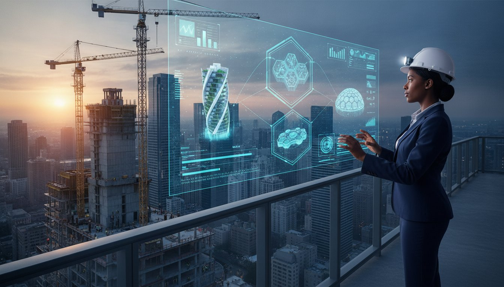
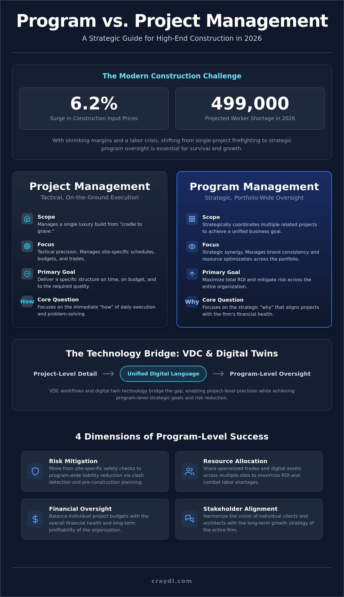

Program Management vs Project Management in Construction: A 2026 Strategic Guide

With construction input prices surging 6.2 percent already this year, your margin for error across multiple job sites has effectively vanished. Understanding the nuance of program management vs project management in construction is no longer a luxury for elite firms. It is the baseline for survival in 2026. You likely feel the friction of overlapping responsibilities and inconsistent quality standards that plague high-end builds. It often feels like you are fighting fires instead of building a legacy.
We are going to change that. This strategic guide helps you master the critical distinctions needed to scale your operations and eliminate the costly inefficiencies draining your ROI. You will discover how to move beyond individual site management into a world of synchronized, high-performance delivery. We will explore how VDC workflows and digital twin technology allow you to maintain project-level detail while achieving program-level oversight. It is time to turn your chaotic workflows into a scalable engine for luxury growth. Master these structures now to ensure your firm remains the primary director of its own success.
Key Takeaways
- Define the strategic split. Master the difference between tactical project delivery and the overarching coordination of a luxury portfolio.
- Leverage high-speed technology. Use VDC and Digital Twins as the unified language to bridge program management vs project management in construction.
- Optimize elite resources. Learn how to share specialized trades and digital assets across multiple sites to maximize your total ROI.
- Scale with precision. Identify the complexity tipping point where traditional workflows fail and program-level oversight becomes essential for growth.
- Mitigate liability. Move beyond site-specific safety checks to program-wide risk reduction through advanced clash detection and pre-construction planning.
Defining the Split: Program Management vs Project Management in 2026
Success in the current market requires more than just showing up on site. It demands a surgical understanding of program management vs project management in construction. Think of project management as the tactical execution of a single luxury deliverable. It's the "cradle to grave" lifecycle of one specific build. Program management, conversely, is the strategic coordination of multiple related projects. It's about achieving a unified business goal rather than just finishing a roof.
This distinction has never been more critical. With construction input prices up 6.2 percent year-to-date and a projected labor shortage of 499,000 workers in 2026, efficiency is your only protection. You can't afford to treat every project as an isolated island. A mature organization uses program management to oversee the entire portfolio, ensuring that project managers have the resources they need without redundant spending.
To better understand the nuances of these roles, watch this helpful video:
In a high-performing firm, these roles don't compete; they collaborate. The project manager reports to the program manager. This hierarchy ensures that site-level decisions align with the firm's broader financial health. While the PM focuses on the immediate "how," the program manager focuses on the strategic "why." This structure creates a scalable workflow where individual successes contribute to a larger, more profitable narrative.
The Project Manager's Scope: Tactical Precision
A project manager lives in the details of a single luxury build. They manage site-specific schedules, coordinate local trades, and handle immediate budget constraints. Their world is defined by the project's scope, time, and cost. If a specific structure is delivered on time and matches the architectural vision, the PM has succeeded. They are the primary directors of the daily narrative on the ground, ensuring every detail meets the client's high-end expectations.
The Program Manager's Scope: Strategic Synergy
Program managers look at the horizon. They manage a portfolio of builds to ensure brand consistency and resource optimization across the board. By standardizing workflows, they reduce redundant pre-construction efforts that often eat into profits. Their primary goal is maximizing ROI and mitigating risk across the entire organization. They ensure that if one site faces a delay, the entire firm doesn't lose momentum. They bridge the gap between traditional craftsmanship and digital automation.
The 4 Dimensions of Construction Management Success
Mastering the landscape of program management vs project management in construction requires a deep dive into four critical dimensions. These aren't just theoretical concepts. They are the operational levers that determine whether your firm scales or stagnates in a volatile market. By shifting your focus from individual tasks to portfolio-wide strategy, you unlock a level of precision that traditional builders simply can't match.
- Risk Mitigation: Moving from reactive site safety to proactive liability reduction.
- Resource Allocation: Sharing elite trades and VDC resources across multiple sites to combat the 2026 labor shortage of 499,000 workers.
- Financial Oversight: Balancing individual project budgeting with the overall financial health of your organization.
- Stakeholder Alignment: Harmonizing the immediate vision of a homeowner with the long-term growth of a developer.
Risk Mitigation: From Site Safety to Digital Twins
At the project level, risk management is often tactical. You're looking for physical hazards or immediate pipe clashes on a single job site. Program management elevates this by using digital twin technology to predict systemic failures across your entire portfolio before they happen. Effective risk mitigation is a proactive digital strategy that neutralizes threats in a virtual environment rather than a reactive fix on a physical site. This high-energy approach ensures that one project's mistake doesn't become a program-wide epidemic.
Financial Oversight and Project Budgeting
Individual project budgets frequently fail because they lack the leverage of a program-level procurement strategy. With construction input prices up 6.2 percent this year, you can't afford to buy materials in isolation. Program managers use quantity takeoffs from across the entire portfolio to negotiate better pricing and secure supply chains. This protects your firm's overall margin while ensuring each project remains solvent. You can streamline your pre-construction planning by integrating these program-wide financial insights early in the design phase.
The program manager acts as the ultimate guardian of the firm's ROI. They look beyond the immediate costs of a single build to identify trends in material escalation or trade performance. This allows for rapid adjustments that keep the entire organization on a trajectory of growth. It's about turning data into a competitive advantage that traditional project management alone cannot provide.
With data becoming your most valuable strategic asset, ensuring its protection is a critical part of modern program oversight. To safeguard your firm's digital foundations from emerging threats, learn more about CyberOne and their expertise in securing high-stakes business environments.
Success in 2026 depends on this synergy. You don't just need someone to watch the site; you need a system to watch the business. Aligning these four dimensions transforms your operation from a collection of projects into a high-performance construction engine.
VDC and Digital Twins: The Tech Bridge Between Project and Program
Technology defines the line between tactical success and strategic dominance. In the debate of program management vs project management in construction, Virtual Design and Construction (VDC) acts as the high-speed bridge. It isn't just software. It's the unified language that allows a project manager to execute on-site while the program manager optimizes the entire portfolio. This digital-first approach ensures that elite results aren't left to chance. It bridges the gap between traditional craftsmanship and high-speed performance.
Clash detection provides a perfect example of this synergy. On a single project, it's a tactical task to prevent a pipe from hitting a structural beam. At the program level, these findings help standardize architectural details across every future build in your portfolio. This is where residential BIM services become transformative. They provide the visual fidelity needed to eliminate manual effort and bypass traditional logistical hurdles. You achieve professional-grade results without the high-cost production environments of the past.
VDC: The Connective Tissue
VDC allows you to visualize the entire construction sequence before a single shovel hits the ground. It creates a playground for creative liberation where mistakes cost nothing. For program managers, this technology is a remote auditing powerhouse. They don't need to be on every site to verify progress. They use shared digital models to coordinate trades with professional-grade precision. This speed ensures that your visual narrative remains consistent across ten or twenty concurrent projects. It creates momentum and ease in a way that paper blueprints never could.
Digital Twins for Lifecycle Management
A digital twin is more than a 3D model. It's the ultimate deliverable for the modern homeowner. While the project manager delivers the physical structure, the program manager delivers the living blueprint. This data isn't just for show. Program managers use project-level data to refine future pre-construction planning. It turns every build into a lesson for the next one. The transition from construction management to facility management happens here. You aren't just building a house; you're creating a high-performance digital asset that works for the user long after the trades have left. This is how you maintain a professional appearance while delivering elite outcomes.

When to Scale: Implementing Program Management for Luxury Builders
Growth often brings a hidden tax: the complexity tipping point. In luxury residential construction, this isn't just about the number of active sites. It's about the technical density of the builds. While a project manager can master the nuances of one custom estate, a portfolio of five or more requires a different engine. Understanding program management vs project management in construction is the key to crossing this threshold without sacrificing your reputation for excellence.
Scaling successfully requires you to move beyond the "one-off" mentality. You need a repeatable framework that protects your margins and your sanity. By integrating pre-construction planning into a program-level strategy, you ensure that every project starts with the same high-velocity momentum. This isn't about adding bureaucracy. It's about creating a centralized intelligence that empowers your site teams to do what they do best.
Signs You Need Program Management
Your firm might be outgrowing traditional project management if you notice these five red flags. First, redundant errors appear across different sites despite having capable leads. Second, you see inconsistent use of VDC or BIM standards between project teams. Third, tracking total resource utilization across the firm feels like guesswork. Fourth, procurement delays on one site begin to cannibalize the schedule of another. Finally, your "Luxury Standard" starts to feel like a moving target rather than a firm guarantee.
The Luxury Standard: Quality Control at Scale
High-end finishes and architectural intent require a obsessive level of oversight. Program management ensures this quality remains consistent across every zip code you enter. By using program-level audits, you verify that every project meets the "Digital Twin" standard before the first slab is poured. This high-energy approach keeps your visual narrative intact. It transforms the project manager from a fire-fighter into a director of elite execution, backed by the data they need to succeed.
Precision is the only way to maintain a professional appearance in a competitive market. If you are ready to eliminate the logistical hurdles holding your portfolio back, partner with CRAYDL to implement strategic program management today. We provide the technological sophistication and result-oriented clarity your luxury builds deserve. Don't let your growth outpace your systems. Build with the confidence of a market leader who has mastered the digital frontier.
CRAYDL: Elevating Construction through Strategic Program Management
Stop fighting the logistical hurdles alone. CRAYDL operates as your elite digital partner, providing the technical sophistication needed to master program management vs project management in construction. We don't just provide software; we deliver a high-performance framework that empowers your team to focus on the art of the build. By positioning technology at the core of your operation, you bypass the friction of traditional workflows and achieve elite outcomes instantly. We act as the discreet expert working behind the scenes to ensure your firm maintains a professional appearance at every scale.
Transforming complex architectural intent into a manageable digital twin is our signature move. We take your most ambitious designs and run them through our high-velocity VDC engine. This process identifies every conflict before it reaches the site. You maintain complete creative control while we handle the heavy lifting of data coordination. It's the intersection of high-end aesthetics and operational velocity. Leading luxury builders choose this tech-first approach because it turns uncertainty into a controlled, repeatable success story.
Our VDC and BIM Expertise
We provide the technical backbone your project managers need to succeed in a volatile market. Our expert-level clash detection eliminates field orders and costly rework, saving weeks of potential delays. We create immersive VR walkthroughs that align homeowners and developers early in the program. These visual experiences secure approvals in minutes rather than months. By using our BIM services, your site teams gain a level of precision that traditional methods can't replicate. You get professional-grade results without the manual effort of old-school coordination.
Strategic Pre-Construction Planning
We move beyond simple modeling to provide true strategic advisory for your entire portfolio. Our program management services ensure your projects stay on schedule by identifying resource gaps before they become crises. We synchronize your project budgeting with real-world data, protecting your margins against the 6.2 percent inflation seen this year. This proactive oversight allows you to scale your luxury builds with total confidence. Ready to optimize your operation and eliminate inefficiencies? Contact CRAYDL for a consultation and start your digital transformation today.
Your success depends on the speed of your systems. CRAYDL ensures your technology keeps pace with your vision. We bridge the gap between traditional craftsmanship and digital automation, allowing you to remain the primary director of your visual narrative. Elevate your builds. Protect your ROI. Partner with a visionary that understands the fast-paced demands of modern construction.
Master the Digital Frontier of Luxury Construction
The landscape of luxury residential construction is shifting toward a model of strategic dominance. You now understand that the debate of program management vs project management in construction is really about the difference between reactive survival and proactive growth. By leveraging VDC technology and standardized workflows, you ensure that architectural intent remains consistent across every site in your portfolio. This transition allows you to maintain elite quality while bypassing the traditional hurdles that stall your competitors. It's about transforming every build into a predictable, high-performance asset that reflects your commitment to excellence.
CRAYDL stands as your visionary partner in this evolution. We provide specialized high-end residential BIM and VDC expertise to luxury builders nationally. Our team delivers proven risk mitigation through sophisticated digital twin workflows and deep technical consulting. Streamline your luxury builds with CRAYDL's VDC and Program Management services. Elevate your operational velocity and achieve professional-grade results with every new foundation you pour. The digital frontier is open. It's time to claim your position as a market leader and build with absolute confidence.
Frequently Asked Questions
What is the main difference between a program manager and a project manager in construction?
A project manager focuses on the tactical execution of a single build, ensuring that specific site remains on schedule and within scope. A program manager provides strategic coordination across multiple related projects to achieve high-level business goals. While the project manager handles daily site logistics, the program manager optimizes resources and standardizes quality across your entire portfolio to maximize total ROI.
Does a small luxury home builder really need program management?
Yes, especially when managing high-density technical requirements or multiple concurrent sites. Program management protects your luxury standard by ensuring that elite finishes and architectural intent remain consistent across every build. It allows smaller firms to bypass traditional logistical hurdles, using sophisticated oversight to maintain a professional appearance while scaling without the need for massive internal overhead.
How does BIM technology help in program management?
BIM acts as the centralized data engine that allows for portfolio-wide oversight and standardization. It provides the visual fidelity needed to audit multiple projects remotely, ensuring that every team follows the same high-performance benchmarks. By using BIM, you can identify systemic issues across your program before they become costly site-level errors, bridging the gap between traditional craftsmanship and digital automation.
Can one person be both a project manager and a program manager?
One person can technically hold both roles in a smaller firm, but this often leads to a loss of strategic focus. As your portfolio grows, the "how" of a single project often cannibalizes the "why" of the entire program. Splitting these roles ensures your team remains the primary director of the visual narrative while maintaining the operational velocity required for modern luxury builds.
What are the benefits of program management for risk mitigation?
Program management shifts your safety strategy from reactive site fixes to proactive systemic prediction. It allows you to identify recurring safety hazards or technical clashes across different job sites and neutralize them in a virtual environment. This is critical in a market where labor shortages and material inflation leave no room for redundant errors or high-cost rework on site.
How do digital twins impact the cost of construction management?
Digital twins reduce the long-term cost of management by creating a living blueprint that persists after the build is complete. They eliminate the manual effort required for future facility management and provide project-level data that refines your next pre-construction planning phase. By delivering a high-performance digital asset, you increase the value for the homeowner while lowering your firm's operational costs over time.
What is the role of VDC in project budgeting?
VDC provides the high-velocity data needed for precise quantity takeoffs and portfolio-level procurement strategies. Instead of buying materials in isolation, you use VDC models to leverage your entire program's volume for better pricing. This level of precision is essential when navigating the 6.2 percent increase in construction input prices seen in 2026, ensuring your margins remain protected across every build.
How do I know if my construction firm is ready to scale to program management?
Your firm is ready to scale when you hit the complexity tipping point, marked by redundant errors appearing across different sites. If you notice inconsistent standards between teams or struggle to track resource utilization across your portfolio, it is time to evolve. Mastering program management vs project management in construction allows you to turn these chaotic workflows into a scalable engine for elite residential growth.
